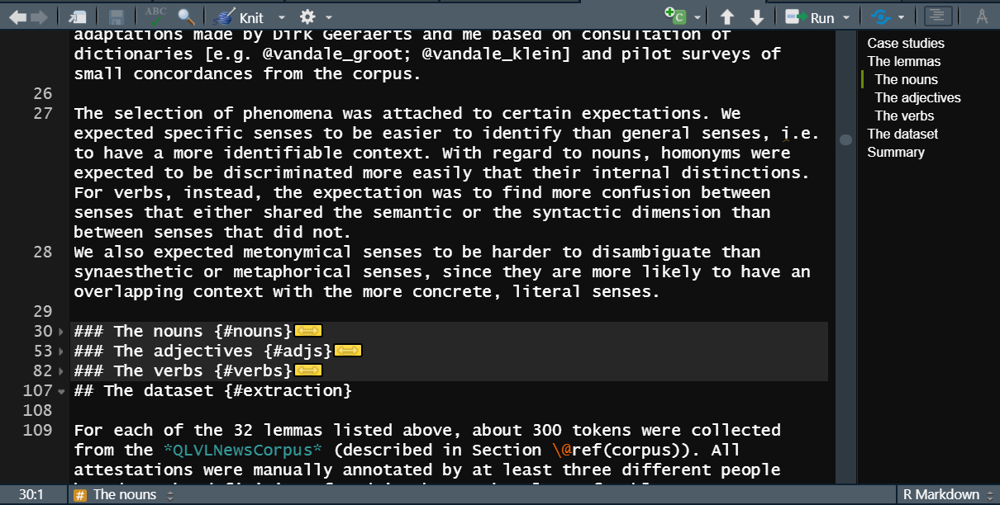

As a researcher that has found out about the marvels of R Markdown, how can you go about writing a book? I offer here my experience writing my own PhD thesis in R Markdown. I must remark that by the time I started writing my dissertation I had some solid experience with R Markdown and R, which helped a lot. Learning R Markdown while struggling with your thesis might not be the best idea, unless —a bit like me— you like figuring out formatting tools as a productive procrastination activity that clears your mind from other taxing aspects of writing.
In each section of this post I will look at a few things of interest that are particular to writing thesis in bookdown (the package to write books in R Markdown) or that I found particularly useful and interesting for my experience.
Output: HTML/PDF
The bookdown package supports three main formats: HTML, PDF and e-books. I will only talk about the first two because they are the ones I used. I knew from the beginning that I wanted at least those two formats: PDF for the printed version that I would have to hand in and HTML to show it to the world in a digital version, like all those other online books I was loving to find. However, I first focused on the HTML only because when I started looking into bookdown I found this:
We strongly recommend that you use an HTML output format instead of LaTeX when you develop a book, since you will not be too distracted by the typesetting details, which can bother you a lot if you constantly look at the PDF output of a book. Leave the job of careful typesetting to the very end (ideally after you have really finished the content of the book).
I agree that HTML output is more reliable in terms of formatting, while \(\LaTeX\) (PDF) output can have some weird stuff that will put you off, such as ugly or not well positioned tables (that looked so good in the HTML version!) or code that runs out of the margins if you use code-snippets. However, I do recommend generating the PDF output anyways, just to check that it compiles. HTML is more lenient than PDF in that it will (almost) always run and at most show you funky output in cases where \(\LaTeX\) will just crash with an error message that you will probably not understand. Such issues can often be resolved by reinstalling stuff, but sometimes it’s a simple thing like some weird symbol in your table. You don’t want to write your whole thesis (or even half of it) and then realize that the PDF just doesn’t compile, because you won’t solve that in just a few hours. That is why I recommend running the PDF anyways, to make sure it is birthed properly, but still look at the output in HTML only (which will always be beautiful and make you happy).
Regarding HTML, I like the bs4-book format the most1, among other things because of the secondary menu on the right and the pop-up footnotes. I changed the primary color to #086a6a and then every time I created the HTML it just filled me with joy. Whatever I wrote, it looked gorgeous and professional, and all I had to do was type it. It really makes your day.
Finally, if you need to ask for feedback, writing comments on an HTML file is not something many people know how to do, so you will want to create the PDF. In any case, one of the advantages of R Markdown is that you can use the exact same input to generate both outputs! There are few things that don’t work exactly the same, though, that I will discuss below, such as features of tables that are specific to one format, or matching the font in your graphs to the font in the rest of your text. Fortunately, the knitr package (that works with rmarkdown) offers you the functions is_html_output() and is_latex_output(), which return TRUE when the outputs are HTML and \(\LaTeX\) respectively and FALSE otherwise. You can use these functions to make your plots and tables adapt to the format of your output.
Macro organization: chapters and frontmatter
A book typically has chapters. As such, bookdown treats the multiple .Rmd files in your project as chapters that are unified in the final product. For an HTML book, this is going to be a website with different HTML pages but one unifying menu or table of contents. Here you must distinguish between the title of your chapter and the name of the file. For example, Chapters 2, 3 and 4 of my dissertation are called “From corpora to clouds”, “Visualization tools” and “Case studies”, but the files are called “workflow”, “nephovis” and “dataset” respectively, with .Rmd extension in the R Markdown version and .html extension when rendered. This means that I can use code names related to the kind of content in my chapter for the names of the files, but then change the title of the chapter as much as I want without any issues. It also means that you will only actually see the original name of my file if you look at the URL (e.g. https://cloudspotting.marianamontes.me/dataset.html), but you will mostly pay attention to the title (“Case studies”) or even the title in the tab of your browser (“Chapter 4 Case studies | Cloudspotting”). The PDF version of the book, on the other hand, is only one file with consecutive page numbering, and the original file names are nowhere to be seen.
{{% callout note %}}
Note that, by default, bookdown will merge all the .Rmd files in your project in alphabetical order, but you can override that by listing your desired files in the desired order in the _bookdown.yml configuration file (see this doc). This is particularly handy if you want to only select one or a few chapters to show to someone in PDF, as I learned after painstakingly trying to print-to-PDF selected pages of my PDF.
{{% /callout %}}
Chapters are, of course, not the only unit in which to divide your text. At a higher level, you can have parts and appendices, which make a nice division in the HTML table of contents and get their own pages in the PDF output. At a lower level, you can have sections and subsections, which you create by lowering the level of the headings: from # for the title of the chapter to ## to the first subheader, then ### and so on. Chapters will be automatically numbered, but you can un-number them by adding a {-} at the end, e.g. for a preface or the references section. When they are numbered, you can set whether the number is preceded by Chapter or maybe Capítulo, Capitolo, Hoofdstuk, etc., by editing the _bookdown.yml configuration file.
language:
ui:
chapter_name: "Chapter "
For cross-referencing chapters, sections and subsections, I suggest adding a code name to the section as well. For example, you may have a temporary heading “The methodological part” to which you assign the codename “methods”:
# The methodological part {#methods}
Anywhere else in your book, you can reference that title with \@ref(methods), which will then be replaced by the correct numbering with a hyperlink to the appropriate header, e.g. “3” if it’s Chapter 3, “3.2” if it’s the second section of chapter 3, etc. You can move the heading, change its level (e.g. from 3.2 to 3.1.2), change the title itself —yet, as long as the codename between the curly braces remains the same, the cross-reference will adapt and keep working from anywhere in your book. And if you eventually post the HTML version online, you can even have an URL that takes you to that section, like this link to section 6.2.3 in my thesis (how cool is that?!).
A final amazing point of sections within chapters is that, in R Studio, you can keep track of your internal organization with a small outline on the right side and you can even collapse a section, that is, hide the content while you are editing. In the image below, for example, you can see the outline of the forth chapter of my thesis and that the third level headings “The nouns”, “The adjectives” and “The verbs” are collapsed: their content is hidden and a yellow box with a double-headed arrow shows up in its stead. I achieved this by clicking on the tiny triangles next to the headings. As a result, I can move around a file more easily, skipping long sections that I don’t want to deal with yet.

Figure 1: Outline and collapsed sections in R Studio editor.
I want to close this section with a very technical adventure: how to add a personalized frontmatter to the PDF output. At the beginning of the thesis, I needed a mandatory title page required by the Faculty, but I also wanted to add a page with a dedication, a list of figures, a list of tables (because I’m demanding like that) and, as if that was not enough, I wanted them, the preface (my abstract) and acknowledgements sections to be numbered with those lowercase roman numbers, so that the first page of Chapter 1 was “page 1” instead. But, because it is quite technical and not something you would worry about until the end, it’s collapsed under the following paragraph.
I want to add the frontmatter!
Adding a frontmatter (in PDF)
First, I have two .tex (raw \(\LaTeX\) files) that you can just copy and adjust with your own data. There is preamble.tex and titlepage.tex, which are then referenced in the _output.yml configuration file:
The preamble.tex file has a bunch of \(\LaTeX\) instructions, starting with a number of packages that are loaded:
\usepackage[backend=biber, style=unified,maxcitenames=3,maxbibnames=99]{biblatex} to deal with citations, in particular the Unified Stylesheet for Linguistics
\usepackage[nottoc]{tocbibind} for lists of tables and figures (see docs)
\usepackage{fancyhdr} for fancier headers; I suggest checking Overleaf docs to learn more about it.
It also sets up a nice dedication format. Whatever you change here will have to do with the formatting itself, but I recommend googling suggestions to see how you would want to change them. If you like what it looks like in my thesis, then don’t change anything.
The titlepage.tex has actual content. The first line, with the \includepdf{} command, adds a frontcover; a similar line is found as the only content of afterbody.tex for the back cover. Then I set up the title page adding the Faculty logo and the different pieces of text that I need. Those you should adapt to your own text —take into account that you will need to change the paths to the images. Then I add empty pages with \newpage and finally a separated page with the dedication, that you will have to adapt as well (unless you also want to dedicate your thesis to my parents: your choice).
At the end of the file there is a command, \frontmatter, that starts the frontmatter proper: everything after that will automatically receive the lowercase roman numbers. As you can see in the file of my acknowledgements, I end the frontmatter with the \mainmatter command (the rest of the \(\LaTeX\) code is to adjust the headers), so that the normal numbering starts.
The lists of figures (lof) and tables (lot) are then activated in the YAML of index.Rmd, where I also include some instructions for the size and margins of the pages using the geometry package:
One of the things I like the most about R Markdown is that I can generate my tables and plots writing a bit of code in the same file where I am writing the rest of my text. The link between the data and the rendering is never erased. I will not talk about how to do that, but I do want to list some resources that have made the experience more enjoyable, mostly by making everything prettier.
First, one way of rendering a table is with the kable() function of the knitr package (Xie 2021b), and it’s OK. But then there is kableExtra(Zhu 2021), which has amazing functionalities to play with tables both in HTML and in \(\LaTeX\), such as merging columns or rows, conditional formatting, footnotes, plots inside your table, etc. Some things will work the same way for both formats, while others will not. Most notably, in PDF it is relevant to make a very long table span over multiple pages or a very wide table to be shown in its own landscape page; in HTML, instead, you would prefer a scrollbox: only a limited space is used for the table and the reader can scroll down or to the side to see more content. The kableExtra package offers all these options.
{{% callout warning %}}
Something I didn’t know until I was fixing the formatting of my thesis is that, while \(\LaTeX\) can be very smart at positioning your figures without leaving huge blank spaces, it does not do the same with tables. I did have to move some text around to fit the tables with the flow.
{{% /callout %}}
When creating plots, I like using the ggplot2 package and its multiple extensions for specific kinds of graphs. I also discovered ggpubr(Kassambara 2020), and I used its theme_pubr() for very neat theming of my plots.2 For most of my graphs, I used Okabe and Ito (2002)’s colorblind-friendly color scheme, available as colorblindr::scale_OkabeIto()(McWhite and Wilke 2021), but I also used the viridis scales.3 Another useful package is cowplot(Wilke 2021), from which I use plot_grid() to bring several plots together in one figure and other functions to create marginal plots (plots in the margins of other plots).
An interesting thing I noticed late into the formatting of my thesis was that the default font of the plots matched the HTML default font very well, but not the serif default font in the PDF output. After a bit of digging I decided that “Bookman Old Style” was the font that I could get that matched the PDF output the best, so I followed the instructions of the extrafont package(Winston Chang 2014), set a plot_text variable dependent on the output of the file, and then used it in theming functions such as ggpubr::theme_pubr() when I created some plot, or in cowplot::plot_grid() when I labeled the plots I was grouping.
Setting up variables like this and creating functions can help you generate multiple plots with consistent format.
{{% /callout %}}
As I mentioned before, one winning feature of R Markdown is that you don’t need to rearrange tables and figures to fit the flow of the text. This is trivial in HTML, where each file is a virtually endless page to scroll down through, so tables and figures simply appear where you want them to. In PDF, figures may be moved around so they are not split by a change of page, and tables may be moved to the start of the following page. So, this shouldn’t worry you. However, some people fret about the position of tables and figures because they may use references such as “the following figure” or “this table”, which I may use in a post like this but is not really appropriate in an academic setting. Instead, you want cross-references. I already mentioned how to reference a heading; referencing figures, plots or even equations is not very different, except that the code name must be prefixed by fig, tab and eq, respectively. For example, I could reference the figure above, Figure 1, which I simply called myfig, by typing \@ref(fig:myfig). This produces the number, and I have to manually precede it with “Figure”. The code name is the name of the R chunk with which you generated the figure/table:
```{r, figname}
# ...code to generate plot
# This figure will be referenced with \@ref(fig:figname)
```
Another neat addition of bookdown is the use of references for captions. Normally, you would add the caption to a figure as a fig.cap chunk option, and to a table as a caption argument in kable(), but then you don’t have much room for formatting. The alternative is to create a reference as a line in R Markdown starting like (ref:figname), and then use '(ref:figname)' where you would have used the caption. That way, you can write longer and fancier captions and avoid cluttered chunk options. For example, the code below (without the space between ref: and mycats) will generate Figure 2, which is referenced as Figure \@ref(fig:mycats).
(ref:mycats) These are my cats, **Chi** is black and *Sai* is tabby.
```{r, mycats, echo = FALSE, fig.cap = "(ref: mycats)", fig.alt="Picture of two cats on a window. One is black, sitting flat
and looking outside. The other one is tabby, sitting straight and
elegantly looking at the camera."}
knitr::include_graphics("images/mycats.jpg")
```
Figure 2: These are my cats, Chi is black and Sai is tabby.
So academic: citations!
A great deal of academic writing involves interacting with other research, mainly through citations. This is extremely simple with R Markdown, especially if you use Zotero and even more if you enhance it with Better BibTex: I talked about it before.
As the documentation shows, citing in R Markdown follows pandoc’s system and is pretty straightforward. Basically you have a citation key, e.g. montes_2021, you precede it with @ if you want to integrate it in the text as Montes (2021), and then you can also surround it with [ ] if you want it in parentheses (Montes 2021) and precede it with - if you want to exclude the name, because you mentioned it before: (2021). In order to add a page number, you just place it between square brackets (@montes_2021 [50] generates Montes (2021, 50)) or, if you’re already inside, separate them by a comma ([@montes_2021,50] generates (Montes 2021, 50)4), and if you want to list multiple sources next to each other you can just separate them with semicolons ([@R-rmarkdown; @R-bookdown] generates (Allaire et al. 2021; Xie 2021a)5).
R Markdown needs two sources of information: the .bib file with all your entries in BibTex format and your .csl file with the citation stylesheet format. This is taken care of in the YAML of the index.html, in my case with the bibliography, biblio-style (for PDF) and csl (for HTML) fields.
The bibliography field lists two .bib files: the first is a collection of Zotero entries that I exported as BibTex, while the second I generated with knitr::write_bib() to obtain the correct citations of all the R packages I had used. The biblio-style field is the one that talks to biber and the biblatex citation package as specified in both _output.yml and preamble.tex (as I showed before). For the HTML output I used the .csl file (downloaded, if I’m not mistaken, from Zotero itself). In both cases I’m referencing the Unified Stylesheet for Linguistics. In any case, it is very neat that you can just write all your references and your full text and only take care of the precise stylesheet at the end or when you want to procrastinate with this kind of minutiae. Your full text will adjust accordingly.
Note that certain stylesheets may include instructions on the order of sources when you cite multiple ones at the same time (order in which you typed? Family name? Year?). When you write a prefix between the brackets, e.g. [cf. @source1, @source2], if that source is moved around, so is the prefix.
I would like to close this section with a note on formatting, not always ‘citations’ per se. First:
In case you are not that familiar with markdown, you can easily create a blockquote by prefixing the paragraph with >.
Second, if you are writing about linguistics, you will probably want to include linguistic examples. Here I have good news and bad news. As far as I know, there is \(\LaTeX\)support for glosses, but no nice tool for HTML. If there is demand, I suppose it could be created. If you don’t need glosses but still would benefit of linguistic examples such as (1) below, Pandoc does have you covered. You precede your sentence with a codename in parentheses and starting with @ (e.g. (@ex1) This is a linguistic example) and then you can reference it anywhere as (@ex1). Note that, like for figures, tables, etc., the key you are referencing does not to be numbered, and if you move your example around the numbering will update automatically. The resulting number assigned to each example is consecutive across your full book based on order of appearance. It is surrounded by parenthesis in the PDF format but looks like a normal numbered list in HTML. I’ve found code to fix that in HTML when you have one file, but not for a book. If anyone has ideas on how to customize it, I’m interested!
This is a linguistic example.
Finally: a cover
OMG you’re done already?! You have a nice cover and all!6
I only added the cover to my PDF output after sending it to print, when I had to send a digital version. I had a PDF for the front cover and one for the back, and I added them with the \includepdf{}\(\LaTeX\) command at the beginning of titlepage.tex and as only content of afterbody.tex, which are called in the _output.yml configuration file.
Cover of my thesis.
For the HTML version, I only added the cover when I made my thesis public after my defense (and I didn’t generate a PDF afterwards). Imitating the source code of one of Hadley Wickam’s books7 I added {.cover width=250} after the title of the Preface (in index.Rmd). I understand that .cover is a CSS class that takes care of all the beauty and neatness of how the cover is presented. In the original case I think the image is also a hyperlink to the Amazon page where you can buy the book (I probably should make mine a hyperlink to my pdf…).
Good luck with yours! I hope this post encourages you and helps you to try to write your own thesis, or a book, or anything else, in R Markdown too!
References
Allaire, JJ, Yihui Xie, Jonathan McPherson, Javier Luraschi, Kevin Ushey, Aron Atkins, Hadley Wickham, Joe Cheng, Winston Chang, and Richard Iannone. 2021. Rmarkdown: Dynamic Documents for r. https://CRAN.R-project.org/package=rmarkdown.
Montes, Mariana. 2021. “Cloudspotting: Visual Analytics for Distributional Semantics.” PhD thesis, Leuven: KU Leuven.
Okabe, Masataka, and Kei Ito. 2002. “Color Universal Design (CUD). How to Make Figures and Presentations That Are Friendly to Colorblind People.”J*Fly Data Depository for Drosophila researchers. November 20, 2002. https://jfly.uni-koeln.de/color/.
Wilke, Claus O. 2021. Cowplot: Streamlined Plot Theme and Plot Annotations for Ggplot2. https://wilkelab.org/cowplot/.
I’m quite sure that the documentation section about this format did not exist yet in the Bookdown book when I started my thesis and I had to do some digging to figure out how it was named. I’m happy it has more documentation now!↩︎
It also has functions for very typical plots, making it easier for example to create a boxplot and show the significance of the difference between groups.↩︎
Even more recently I discovered the color palettes of ggsci, but I haven’t used them yet.↩︎
How pages are indicated depend on the citation stylesheet.↩︎
Note that R Markdown adds the a at the end by itself.↩︎
I used Inkscape to design mine, by the way. It’s open-source and vector based, working on .svg and then creating PNG, JPG or PDF output, as you prefer. I used ggplot2::ggsave(device = "png", bg = "transparent") on a lot of my plots to save them in a separate folder and then selected and imported a bunch of them and played around until it looked nice. I had just got my second dose of the COVID vaccine so that was the only intellectual effort I could do that day.↩︎
The perks of open-source and GitHub repositories!↩︎